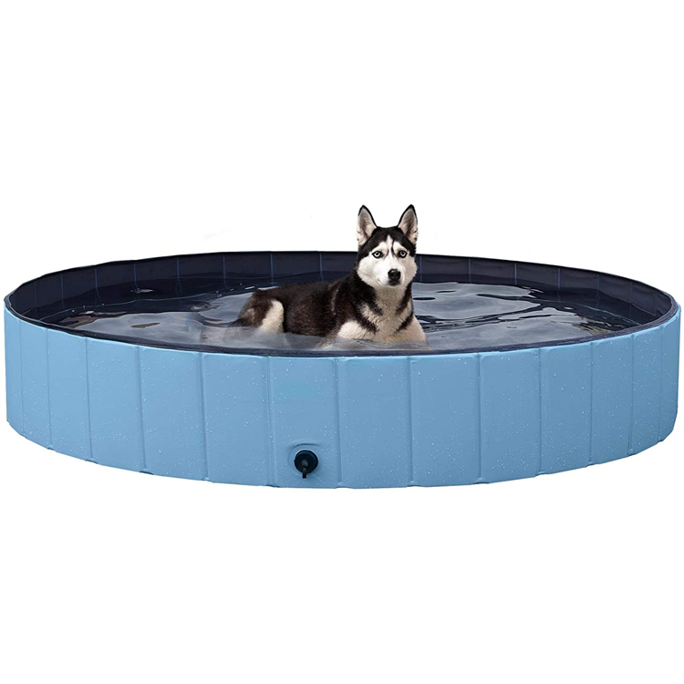
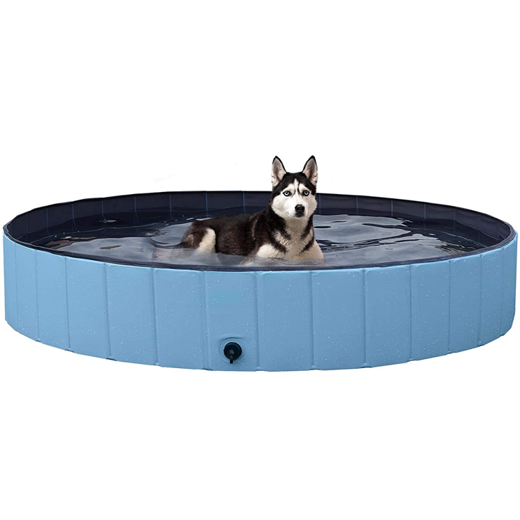

Piscina para perros
AJKMEI
39,99 €

PATRICIA S.
27 de febrero 2022, 16:48
La compré como cuna para que mis cachorros estuviesen a salvo ahora que aún no son independientes. Como idea no está mal, pero al no tener estabilidad para esta función, la tuve q devolver y comprar otro modelo con barillas y patas.
LUCÍA ÁLVAREZ
12 de enero 2022, 12:06
Necesitaba una pequeña piscina para mi perrita que se bañara y se refrescara por las tardes en la terraza. Vi este producto y no destacaba por ser muy complejo, pero se veía bastante económico que era también en lo que me estaba fijando. Cuando me llegó me gustó porque me entra justo entre las dos paredes que era el miedo que yo tenía, que no me cupiera ahí. La he llenado tras tirarme toda la tarde con cubos y pues la perrita le da cosa meterse, pero ya va de vez en cuando y se mete un poco, eso si me pone toda la terraza perdida de agua. Los muros son resistentes y de buen material, en ese sentido estoy contenta. Me ha parecido un buen producto